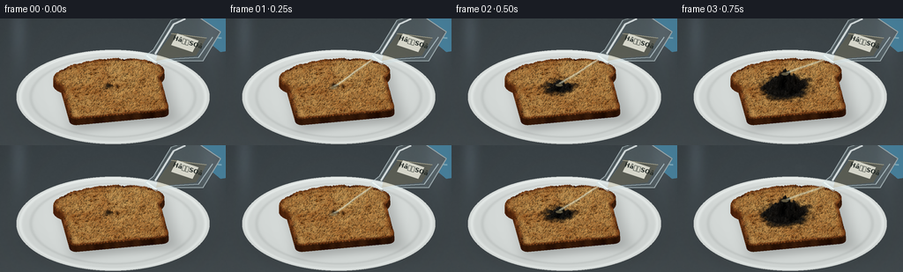
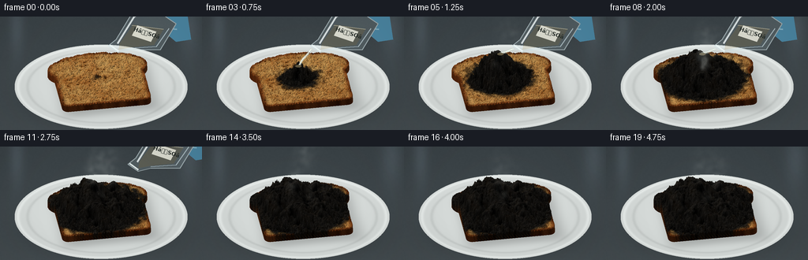
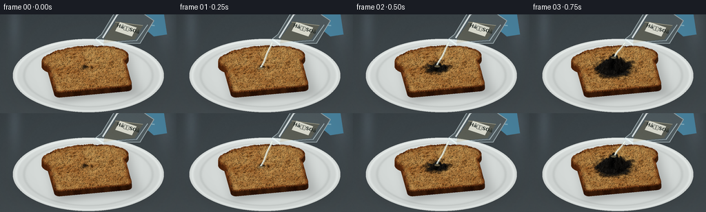
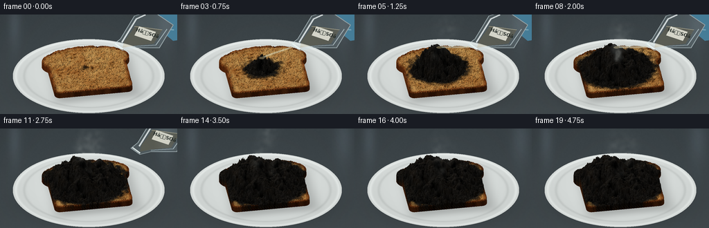
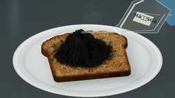
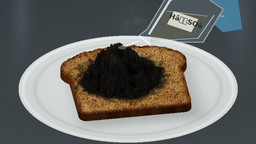

CODING AGENTS AS PIXEL WORLD MODELS
traex/GPT-6.1-Sol · material_0038
点击播放 · 原生 RGB 像素
逐轮保存的候选
回放视频、检查图与代码变化。
每份候选均可单独播放。实际图片检查记录在下方工具轨迹中。
候选 01播放与检查图
点击播放 · 原生 RGB 像素


展开代码变化
--- 上一保存版本
+++ 本次保存版本
@@ -0,0 +1,231 @@
+from pathlib import Path
+import numpy as np
+from PIL import Image, ImageDraw, ImageFilter, ImageFont
+from scipy.ndimage import gaussian_filter, distance_transform_edt, map_coordinates
+import artifact_io
+
+ROOT=Path(__file__).resolve().parent
+W,H,S=256,144,3
+WW,HH=W*S,H*S
+rng=np.random.default_rng(392)
+# A stationary macro camera, and a procedural, genuinely three-dimensional bread surface.
+elev=np.deg2rad(35); si,co=np.sin(elev),np.cos(elev)
+scale=43.; cx,cy=128.,89.
+Y,X=np.mgrid[0:HH,0:WW].astype(float)/S
+sx=(X-cx)/scale; sv=(Y-cy)/scale
+angle=-.16; ca,sa=np.cos(angle),np.sin(angle)
+N=600; lo=-2.; hi=2.; step=(hi-lo)/(N-1)
+yg,xg=np.mgrid[lo:hi:complex(N),lo:hi:complex(N)]
+# Rounded body plus the loaf's generously rounded upper crown.
+qx=np.abs(xg)-1.14; qy=np.abs(yg-.18)-.81
+sd=np.hypot(np.maximum(qx,0),np.maximum(qy,0))+np.minimum(np.maximum(qx,qy),0)-.18
+crown=((xg/1.48)**2+((yg+.69)/.72)**2)<1
+mask=(sd<0)|crown
+edge=distance_transform_edt(mask)*step
+
+def noise(sig):
+ a=gaussian_filter(rng.normal(size=(N,N)),sig)
+ return a/(a.std()+1e-8)
+nlarge=noise(25); nmid=noise(7); nfine=noise(1.2); ngrain=noise(.38)
+# Baked crumb pores, each with a shaded cavity and a tiny lit lip.
+pores=np.zeros((N,N)); lips=np.zeros((N,N))
+for _ in range(2700):
+ xx=rng.uniform(-1.45,1.45); yy=rng.uniform(-1.4,1.2)
+ rr=rng.uniform(.009,.036); ix=int((xx-lo)/step); iy=int((yy-lo)/step); r=int(rr/step*3)+2
+ a,b=max(0,iy-r),min(N,iy+r+1); c,d=max(0,ix-r),min(N,ix+r+1)
+ dx=(xg[a:b,c:d]-xx)/rr; dy=(yg[a:b,c:d]-yy)/(rr*rng.uniform(.6,1.4))
+ p=np.exp(-(dx*dx+dy*dy)*1.7)*rng.uniform(.4,1)
+ pores[a:b,c:d]+=p
+ lips[a:b,c:d]+=np.exp(-(dx*dx+(dy+.9)**2)*2.2)*.24
+pores=np.clip(pores,0,1.8)
+crust=np.clip((.12-edge)/.085,0,1)
+roast=np.clip(.33+.11*nlarge+.08*nmid+.09*nfine,0,1)
+base=np.stack([227-60*roast,178-83*roast,103-67*roast],axis=-1)
+base+=nfine[:,:,None]*4+ngrain[:,:,None]*2
+base-=pores[:,:,None]*np.array([62,57,43]); base+=lips[:,:,None]*25
+crust_col=np.stack([125+17*nmid,64+12*nmid,25+7*nmid],axis=-1)
+base=base*(1-crust[:,:,None])+crust_col*crust[:,:,None]
+baseheight=.245+.008*nmid+.006*nfine-.013*pores+.013*np.exp(-edge/.05)
+# Carbon froth has real hemispherical lobes, irregular fissures and pitted pores.
+lobes=np.zeros((N,N))
+for _ in range(115):
+ xx=rng.uniform(-1.4,1.4); yy=rng.uniform(-1.25,1.05)
+ r=rng.uniform(.065,.24)
+ dome=np.sqrt(np.maximum(0,1-((xg-xx)**2+(yg-yy)**2)/(r*r)))*r
+ lobes=np.maximum(lobes,dome)
+crack=np.clip((np.abs(nmid)-.78)*3,0,1)
+charnoise=noise(2)
+charcolor=np.stack([30+6*nmid+4*charnoise,28+5*nmid+4*charnoise,25+4*nmid+4*charnoise],-1)
+charcolor-=pores[:,:,None]*12
+charcolor-=crack[:,:,None]*7
+charcolor=np.clip(charcolor,5,55)
+
+# Soft laboratory background, tabletop grain and the plate's contact shadow.
+back=np.empty((HH,WW,3),float)
+back[:]=np.stack([58+.075*Y,66+.075*Y,70+.073*Y],-1)
+coarse=gaussian_filter(rng.normal(size=(HH,WW)),2)
+back+=coarse[:,:,None]*2.8
+# Defocused vertical laboratory forms at the rear, without distracting detail.
+for bx,bw in [(21,9),(240,13)]:
+ glow=np.exp(-((X-bx)/bw)**2-((Y-13)/37)**2)
+ back+=glow[:,:,None]*np.array([14,16,18])
+shadow=np.exp(-(((X-130)/111)**2+((Y-110)/38)**2)*2)
+back*=1-.36*shadow[:,:,None]
+
+# Intersection with a shallow oval porcelain laboratory dish.
+yplane=sv/si
+r=np.sqrt((sx/2.55)**2+(yplane/2.17)**2)
+plate=r<1
+platecolor=np.stack([213+12*(1-r),218+12*(1-r),216+12*(1-r)],-1)
+rim=np.exp(-((r-.96)/.02)**2)
+inner=np.exp(-((r-.85)/.02)**2)
+platecolor+=rim[:,:,None]*18-inner[:,:,None]*14
+platecolor+=(-yplane)[:,:,None]*2
+background=np.where(plate[:,:,None],platecolor,back)
+# Toast cast shadow on ceramic, diffused behind and to the right.
+tx=ca*sx+sa*yplane; ty=-sa*sx+ca*yplane
+breadshadow=np.exp(-((tx-.13)/1.46)**8-((ty-.15)/1.29)**8)*.23
+background*=1-breadshadow[:,:,None]*plate[:,:,None]
+
+
+def lookup(a,u,v):
+ return map_coordinates(a,[(v-lo)/step,(u-lo)/step],order=1,mode='constant',cval=0)
+
+def render_bread(t):
+ # Clear acid lands just behind the center and spreads, then the carbon swells.
+ age=max(0,t-.25)
+ spread=.06+1.64*(1-np.exp(-age/1.18))
+ dist=np.sqrt(((xg+.12)/1.03)**2+((yg+.12)/.90)**2)
+ front=spread-dist+.057*nmid+.025*nfine
+ reacted=np.clip(front/.16,0,1)*mask
+ mature=np.clip((front-.16)/.48,0,1)*np.clip(age/.85,0,1)
+ swelling=(.54+.16*nlarge)*np.exp(-dist*dist/1.6)*mature
+ height=baseheight+swelling+lobes*mature*.85-.022*crack*mature
+ height=np.where(mask,height,0)
+ # Amber wetting is followed by black, foamy carbonization.
+ wet=np.clip((front+.13)/.15,0,1)*mask
+ burnt=np.clip(reacted*1.22,0,1)
+ color=base*(1-.48*wet[:,:,None])
+ color=color*(1-burnt[:,:,None])+charcolor*burnt[:,:,None]
+ gy,gx=np.gradient(height,step)
+ # Raymarch only the tight region of the slice.
+ zone=(X>45)&(X<203)&(Y>10)&(Y<125)
+ idx=np.flatnonzero(zone)
+ us=sx.ravel()[idx]; vs=sv.ravel()[idx]
+ hit=np.zeros(len(idx),bool); hx=np.zeros(len(idx)); hy=np.zeros(len(idx)); hz=np.zeros(len(idx)); side=np.zeros(len(idx),bool)
+ for z in np.arange(1.40,.025,-.010):
+ ids=np.flatnonzero(~hit)
+ if len(ids)==0: break
+ wy=(vs[ids]+z*co)/si
+ u=ca*us[ids]+sa*wy; v=-sa*us[ids]+ca*wy
+ h=lookup(height,u,v)
+ take=(h>=z)&(h>0)
+ sel=ids[take]
+ hit[sel]=True; hx[sel]=u[take];hy[sel]=v[take];hz[sel]=z
+ side[sel]=h[take]-z>.035
+ ids=np.flatnonzero(hit)
+ u,v=hx[ids],hy[ids]
+ nx=-lookup(gx,u,v); ny=-lookup(gy,u,v); nz=np.ones(len(ids))
+ # Side walls retain a crisp baked crust, unless the froth has overtaken them.
+ is_side=side[ids]
+ sideface=is_side & (hz[ids]<.26)
+ ncx=u/1.5;ncy=v/1.4; ln=np.sqrt(ncx*ncx+ncy*ncy)+1e-5
+ nx[sideface]=ncx[sideface]/ln[sideface];ny[sideface]=ncy[sideface]/ln[sideface];nz[sideface]=.1
+ norm=np.sqrt(nx*nx+ny*ny+nz*nz)
+ lighting=.47+.55*np.maximum(0,(-.48*nx-.43*ny+.76*nz)/norm)
+ cols=np.stack([lookup(color[:,:,k],u,v) for k in range(3)],1)
+ cols[sideface]*=np.array([.75,.67,.57])
+ cols*=lighting[:,None]
+ # Low glints on still-wet acid, not on the porous mature char.
+ shine=lookup(wet*(1-mature),u,v)*np.maximum(0,(-.15*nx-.69*ny+.7*nz)/norm)**18
+ cols+=shine[:,None]*24
+ out=background.copy().reshape(-1,3)
+ out[idx[ids]]=cols
+ return Image.fromarray(np.clip(out.reshape(HH,WW,3),0,255).astype(np.uint8)),height
+
+def overlay_flask(im,t,height):
+ if t>3.1:return im
+ # Glass pouring flask tilted toward the bread, with a cropped nitrile-gloved grip.
+ withdraw=max(0,t-2.55)*125
+ shift=np.array([withdraw,-withdraw*.58])
+ # Coordinates in the macro camera, flask neck at lower left.
+ pts=np.array([[164,43],[174,35],[194,2],[219,-6],[250,15],[230,48],[193,48],[177,52]])+shift
+ def p(v):return tuple((np.array(v)+shift)*S)
+ layer=Image.new('RGBA',im.size);d=ImageDraw.Draw(layer)
+ glove=[(229,-5),(263,-5),(269,35),(250,38),(231,22),(217,14),(218,5)]
+ d.polygon([p(a) for a in glove], fill=(74,132,160,255))
+ d.ellipse([p((213,3)),p((237,20))],fill=(91,151,178,255))
+ d.line([p((226,7)),p((242,21)),p((251,22))],fill=(133,183,203,230),width=2*S)
+ d.polygon([tuple(q*S) for q in pts], fill=(185,211,218,42))
+ # The glass has an optically clear body, edge reflections and a light straw liquid.
+ d.polygon([p(a) for a in [(179,39),(196,16),(234,22),(222,42),(193,45),(177,48)]],fill=(174,161,119,70))
+ d.line([tuple(q*S) for q in pts]+[tuple(pts[0]*S)],fill=(213,230,233,155),width=S)
+ d.line([p((176,40)),p((197,6)),p((210,0))],fill=(245,253,253,210),width=2*S)
+ d.line([p((193,46)),p((225,44)),p((241,21))],fill=(222,242,248,165),width=S)
+ d.line([p((194,17)),p((234,22))],fill=(247,238,201,150),width=S)
+ d.line([p((166,42)),p((177,50))],fill=(240,250,248,230),width=2*S)
+ # A compact reagent label makes the otherwise transparent liquid identifiable.
+ label=[(201,17),(225,25),(218,38),(194,30)]
+ d.polygon([p(a) for a in label],fill=(232,232,218,235))
+ try:font=ImageFont.truetype('/usr/share/fonts/truetype/dejavu/DejaVuSans-Bold.ttf',7*S)
+ except:font=ImageFont.load_default()
+ txt=Image.new('RGBA',(35*S,13*S));td=ImageDraw.Draw(txt);td.text((1*S,1*S),'HâSOâ',font=font,fill=(36,43,40,255))
+ txt=txt.rotate(-18,resample=Image.Resampling.BICUBIC,expand=True)
+ layer.alpha_composite(txt,(int((193+shift[0])*S),int((16+shift[1])*S)))
+ im=Image.alpha_composite(im.convert('RGBA'),layer)
+ # Continuous translucent viscous stream, tapering into a growing blackened crater.
+ if .18<t<2.65:
+ l=Image.new('RGBA',im.size);d=ImageDraw.Draw(l)
+ z=float(lookup(height,np.array([-.12]),np.array([-.12]))[0])
+ wx=ca*(-.12)-sa*(-.12);wy=sa*(-.12)+ca*(-.12)
+ target=(cx+wx*scale,cy+(wy*si-z*co)*scale)
+ start=(166+shift[0],47+shift[1])
+ path=[]
+ for f in np.linspace(0,1,40):
+ xx=start[0]*(1-f)+target[0]*f+1.0*np.sin(f*8+t*8)*f
+ yy=start[1]*(1-f)+target[1]*f
+ path.append((int(xx*S),int(yy*S)))
+ d.line(path,fill=(201,197,158,110),width=3*S)
+ d.line([(x-S//2,y) for x,y in path],fill=(246,251,230,155),width=S)
+ d.ellipse(((target[0]-4)*S,(target[1]-1)*S,(target[0]+4)*S,(target[1]+2)*S),fill=(182,165,120,125))
+ im=Image.alpha_composite(im,l)
+ return im.convert('RGB')
+
+# Diffuse, rising smoke is a smooth advected volume, with filamentary curls.
+smnoise=rng.normal(size=(HH,WW))
+smnoise=gaussian_filter(smnoise,7);smnoise/=smnoise.std()
+def steam(im,t):
+ strength=np.clip((t-.65)/1.3,0,1)*(.86 if t>3.2 else 1)
+ if strength==0:return im
+ field=np.zeros((HH,WW))
+ for j in range(7):
+ age=(t*.68+j*.157)%1.35
+ rise=age*49
+ px=123+np.sin(j*2.5+age*3)*11+rise*.17
+ py=68-rise
+ width=4+age*8
+ field+=np.exp(-((X-px)/width)**2-((Y-py)/(5+age*10))**2)*(.20+.08*np.sin(j))*(1-age/1.5)
+ wav=np.sin(X*.077+Y*.037+t*1.4)*.35+1
+ ns=np.roll(smnoise,(-int(t*10*S),int(t*2*S)),(0,1))
+ alpha=np.clip(field*strength*wav*(.7+.24*ns),0,.31)
+ # It fades into the overhead air rather than ending at a hard edge.
+ alpha*=np.clip((83-Y)/18,0,1)
+ arr=np.asarray(im).astype(float)
+ arr=arr*(1-alpha[:,:,None])+np.array([207,213,208])*alpha[:,:,None]
+ return Image.fromarray(np.clip(arr,0,255).astype(np.uint8))
+
+frames=[]
+for i in range(20):
+ t=i/4
+ im,h=render_bread(t)
+ im=overlay_flask(im,t,h)
+ im=steam(im,t)
+ im=im.resize((W,H),Image.Resampling.LANCZOS)
+ # Subtle photographic vignette, with no artificial camera movement.
+ arr=np.asarray(im).astype(float)
+ yy,xx=np.mgrid[:H,:W]
+ vig=1-.07*((xx-128)/155)**2-.035*((yy-76)/95)**2
+ arr*=vig[:,:,None]
+ frames.append(np.clip(arr,0,255).astype(np.uint8))
+ print('frame',i,flush=True)
+artifact_io.save(np.stack(frames),ROOT)
候选 02播放与检查图
点击播放 · 原生 RGB 像素

展开代码变化
--- 上一保存版本
+++ 本次保存版本
@@ -147,7 +147,7 @@
if t>3.1:return im
# Glass pouring flask tilted toward the bread, with a cropped nitrile-gloved grip.
withdraw=max(0,t-2.55)*125
- shift=np.array([withdraw,-withdraw*.58])
+ shift=np.array([withdraw-27,-withdraw*.58-6])
# Coordinates in the macro camera, flask neck at lower left.
pts=np.array([[164,43],[174,35],[194,2],[219,-6],[250,15],[230,48],[193,48],[177,52]])+shift
def p(v):return tuple((np.array(v)+shift)*S)
@@ -185,8 +185,8 @@
xx=start[0]*(1-f)+target[0]*f+1.0*np.sin(f*8+t*8)*f
yy=start[1]*(1-f)+target[1]*f
path.append((int(xx*S),int(yy*S)))
- d.line(path,fill=(201,197,158,110),width=3*S)
- d.line([(x-S//2,y) for x,y in path],fill=(246,251,230,155),width=S)
+ d.line(path,fill=(205,219,212,165),width=3*S)
+ d.line([(x-S//2,y) for x,y in path],fill=(249,255,245,235),width=S)
d.ellipse(((target[0]-4)*S,(target[1]-1)*S,(target[0]+4)*S,(target[1]+2)*S),fill=(182,165,120,125))
im=Image.alpha_composite(im,l)
return im.convert('RGB')
候选 03播放与检查图
点击播放 · 原生 RGB 像素

展开代码变化
--- 上一保存版本
+++ 本次保存版本
@@ -169,7 +169,7 @@
d.polygon([p(a) for a in label],fill=(232,232,218,235))
try:font=ImageFont.truetype('/usr/share/fonts/truetype/dejavu/DejaVuSans-Bold.ttf',7*S)
except:font=ImageFont.load_default()
- txt=Image.new('RGBA',(35*S,13*S));td=ImageDraw.Draw(txt);td.text((1*S,1*S),'HâSOâ',font=font,fill=(36,43,40,255))
+ txt=Image.new('RGBA',(35*S,13*S));td=ImageDraw.Draw(txt);td.text((1*S,1*S),'H2SO4',font=font,fill=(36,43,40,255))
txt=txt.rotate(-18,resample=Image.Resampling.BICUBIC,expand=True)
layer.alpha_composite(txt,(int((193+shift[0])*S),int((16+shift[1])*S)))
im=Image.alpha_composite(im.convert('RGBA'),layer)
候选 04播放与检查图
可观测工具轨迹
实际执行的命令与返回图片。
命令 1exit 0
/bin/bash -lc 'ls -la && cat prompt.txt && cat GENERATION_RULES.md && cat task_spec.json'
命令 2exit 0
/bin/bash -lc "cat artifact_io.py && python - <<'PY' import importlib.util for x in ['numpy','PIL','scipy','cv2']: print(x, bool(importlib.util.find_spec(x))) PY"
命令 3exit 0
/bin/bash -lc "cat > generate.py <<'PY'
from pathlib import Path
import numpy as np
from PIL import Image, ImageDraw, ImageFilter, ImageFont
from scipy.ndimage import gaussian_filter, distance_transform_edt, map_coordinates
import artifact_io
ROOT=Path(__file__).resolve().parent
W,H,S=256,144,3
WW,HH=W*S,H*S
rng=np.random.default_rng(392)
# A stationary macro camera, and a procedural, genuinely three-dimensional bread surface.
elev=np.deg2rad(35); si,co=np.sin(elev),np.cos(elev)
scale=43.; cx,cy=128.,89.
Y,X=np.mgrid[0:HH,0:WW].astype(float)/S
sx=(X-cx)/scale; sv=(Y-cy)/scale
angle=-.16; ca,sa=np.cos(angle),np.sin(angle)
N=600; lo=-2.; hi=2.; step=(hi-lo)/(N-1)
yg,xg=np.mgrid[lo:hi:complex(N),lo:hi:complex(N)]
# Rounded body plus the loaf's generously rounded upper crown.
qx=np.abs(xg)-1.14; qy=np.abs(yg-.18)-.81
sd=np.hypot(np.maximum(qx,0),np.maximum(qy,0))+np.minimum(np.maximum(qx,qy),0)-.18
crown=((xg/1.48)**2+((yg+.69)/.72)**2)<1
mask=(sd<0)|crown
edge=distance_transform_edt(mask)*step
def noise(sig):
a=gaussian_filter(rng.normal(size=(N,N)),sig)
return a/(a.std()+1e-8)
nlarge=noise(25); nmid=noise(7); nfine=noise(1.2); ngrain=noise(.38)
# Baked crumb pores, each with a shaded cavity and a tiny lit lip.
pores=np.zeros((N,N)); lips=np.zeros((N,N))
for _ in range(2700):
xx=rng.uniform(-1.45,1.45); yy=rng.uniform(-1.4,1.2)
rr=rng.uniform(.009,.036); ix=int((xx-lo)/step); iy=int((yy-lo)/step); r=int(rr/step*3)+2
a,b=max(0,iy-r),min(N,iy+r+1); c,d=max(0,ix-r),min(N,ix+r+1)
dx=(xg[a:b,c:d]-xx)/rr; dy=(yg[a:b,c:d]-yy)/(rr*rng.uniform(.6,1.4))
p=np.exp(-(dx*dx+dy*dy)*1.7)*rng.uniform(.4,1)
pores[a:b,c:d]+=p
lips[a:b,c:d]+=np.exp(-(dx*dx+(dy+.9)**2)*2.2)*.24
pores=np.clip(pores,0,1.8)
crust=np.clip((.12-edge)/.085,0,1)
roast=np.clip(.33+.11*nlarge+.08*nmid+.09*nfine,0,1)
base=np.stack([227-60*roast,178-83*roast,103-67*roast],axis=-1)
base+=nfine[:,:,None]*4+ngrain[:,:,None]*2
base-=pores[:,:,None]*np.array([62,57,43]); base+=lips[:,:,None]*25
crust_col=np.stack([125+17*nmid,64+12*nmid,25+7*nmid],axis=-1)
base=base*(1-crust[:,:,None])+crust_col*crust[:,:,None]
baseheight=.245+.008*nmid+.006*nfine-.013*pores+.013*np.exp(-edge/.05)
# Carbon froth has real hemispherical lobes, irregular fissures and pitted pores.
lobes=np.zeros((N,N))
for _ in range(115):
xx=rng.uniform(-1.4,1.4); yy=rng.uniform(-1.25,1.05)
r=rng.uniform(.065,.24)
dome=np.sqrt(np.maximum(0,1-((xg-xx)**2+(yg-yy)**2)/(r*r)))*r
lobes=np.maximum(lobes,dome)
crack=np.clip((np.abs(nmid)-.78)*3,0,1)
charnoise=noise(2)
charcolor=np.stack([30+6*nmid+4*charnoise,28+5*nmid+4*charnoise,25+4*nmid+4*charnoise],-1)
charcolor-=pores[:,:,None]*12
charcolor-=crack[:,:,None]*7
charcolor=np.clip(charcolor,5,55)
# Soft laboratory background, tabletop grain and the plate's contact shadow.
back=np.empty((HH,WW,3),float)
back[:]=np.stack([58+.075*Y,66+.075*Y,70+.073*Y],-1)
coarse=gaussian_filter(rng.normal(size=(HH,WW)),2)
back+=coarse[:,:,None]*2.8
# Defocused vertical laboratory forms at the rear, without distracting detail.
for bx,bw in [(21,9),(240,13)]:
glow=np.exp(-((X-bx)/bw)**2-((Y-13)/37)**2)
back+=glow[:,:,None]*np.array([14,16,18])
shadow=np.exp(-(((X-130)/111)**2+((Y-110)/38)**2)*2)
back*=1-.36*shadow[:,:,None]
# Intersection with a shallow oval porcelain laboratory dish.
yplane=sv/si
r=np.sqrt((sx/2.55)**2+(yplane/2.17)**2)
plate=r<1
platecolor=np.stack([213+12*(1-r),218+12*(1-r),216+12*(1-r)],-1)
rim=np.exp(-((r-.96)/.02)**2)
inner=np.exp(-((r-.85)/.02)**2)
platecolor+=rim[:,:,None]*18-inner[:,:,None]*14
platecolor+=(-yplane)[:,:,None]*2
background=np.where(plate[:,:,None],platecolor,back)
# Toast cast shadow on ceramic, diffused behind and to the right.
tx=ca*sx+sa*yplane; ty=-sa*sx+ca*yplane
breadshadow=np.exp(-((tx-.13)/1.46)**8-((ty-.15)/1.29)**8)*.23
background*=1-breadshadow[:,:,None]*plate[:,:,None]
def lookup(a,u,v):
return map_coordinates(a,[(v-lo)/step,(u-lo)/step],order=1,mode='constant',cval=0)
def render_bread(t):
# Clear acid lands just behind the center and spreads, then the carbon swells.
age=max(0,t-.25)
spread=.06+1.64*(1-np.exp(-age/1.18))
dist=np.sqrt(((xg+.12)/1.03)**2+((yg+.12)/.90)**2)
front=spread-dist+.057*nmid+.025*nfine
reacted=np.clip(front/.16,0,1)*mask
mature=np.clip((front-.16)/.48,0,1)*np.clip(age/.85,0,1)
swelling=(.54+.16*nlarge)*np.exp(-dist*dist/1.6)*mature
height=baseheight+swelling+lobes*mature*.85-.022*crack*mature
height=np.where(mask,height,0)
# Amber wetting is followed by black, foamy carbonization.
wet=np.clip((front+.13)/.15,0,1)*mask
burnt=np.clip(reacted*1.22,0,1)
color=base*(1-.48*wet[:,:,None])
color=color*(1-burnt[:,:,None])+charcolor*burnt[:,:,None]
gy,gx=np.gradient(height,step)
# Raymarch only the tight region of the slice.
zone=(X>45)&(X<203)&(Y>10)&(Y<125)
idx=np.flatnonzero(zone)
us=sx.ravel()[idx]; vs=sv.ravel()[idx]
hit=np.zeros(len(idx),bool); hx=np.zeros(len(idx)); hy=np.zeros(len(idx)); hz=np.zeros(len(idx)); side=np.zeros(len(idx),bool)
for z in np.arange(1.40,.025,-.010):
ids=np.flatnonzero(~hit)
if len(ids)==0: break
wy=(vs[ids]+z*co)/si
u=ca*us[ids]+sa*wy; v=-sa*us[ids]+ca*wy
h=lookup(height,u,v)
take=(h>=z)&(h>0)
sel=ids[take]
hit[sel]=True; hx[sel]=u[take];hy[sel]=v[take];hz[sel]=z
side[sel]=h[take]-z>.035
ids=np.flatnonzero(hit)
u,v=hx[ids],hy[ids]
nx=-lookup(gx,u,v); ny=-lookup(gy,u,v); nz=np.ones(len(ids))
# Side walls retain a crisp baked crust, unless the froth has overtaken them.
is_side=side[ids]
sideface=is_side & (hz[ids]<.26)
ncx=u/1.5;ncy=v/1.4; ln=np.sqrt(ncx*ncx+ncy*ncy)+1e-5
nx[sideface]=ncx[sideface]/ln[sideface];ny[sideface]=ncy[sideface]/ln[sideface];nz[sideface]=.1
norm=np.sqrt(nx*nx+ny*ny+nz*nz)
lighting=.47+.55*np.maximum(0,(-.48*nx-.43*ny+.76*nz)/norm)
cols=np.stack([lookup(color[:,:,k],u,v) for k in range(3)],1)
cols[sideface]*=np.array([.75,.67,.57])
cols*=lighting[:,None]
# Low glints on still-wet acid, not on the porous mature char.
shine=lookup(wet*(1-mature),u,v)*np.maximum(0,(-.15*nx-.69*ny+.7*nz)/norm)**18
cols+=shine[:,None]*24
out=background.copy().reshape(-1,3)
out[idx[ids]]=cols
return Image.fromarray(np.clip(out.reshape(HH,WW,3),0,255).astype(np.uint8)),height
def overlay_flask(im,t,height):
if t>3.1:return im
# Glass pouring flask tilted toward the bread, with a cropped nitrile-gloved grip.
withdraw=max(0,t-2.55)*125
shift=np.array([withdraw,-withdraw*.58])
# Coordinates in the macro camera, flask neck at lower left.
pts=np.array([[164,43],[174,35],[194,2],[219,-6],[250,15],[230,48],[193,48],[177,52]])+shift
def p(v):return tuple((np.array(v)+shift)*S)
layer=Image.new('RGBA',im.size);d=ImageDraw.Draw(layer)
glove=[(229,-5),(263,-5),(269,35),(250,38),(231,22),(217,14),(218,5)]
d.polygon([p(a) for a in glove], fill=(74,132,160,255))
d.ellipse([p((213,3)),p((237,20))],fill=(91,151,178,255))
d.line([p((226,7)),p((242,21)),p((251,22))],fill=(133,183,203,230),width=2*S)
d.polygon([tuple(q*S) for q in pts], fill=(185,211,218,42))
# The glass has an optically clear body, edge reflections and a light straw liquid.
d.polygon([p(a) for a in [(179,39),(196,16),(234,22),(222,42),(193,45),(177,48)]],fill=(174,161,119,70))
d.line([tuple(q*S) for q in pts]+[tuple(pts[0]*S)],fill=(213,230,233,155),width=S)
d.line([p((176,40)),p((197,6)),p((210,0))],fill=(245,253,253,210),width=2*S)
d.line([p((193,46)),p((225,44)),p((241,21))],fill=(222,242,248,165),width=S)
d.line([p((194,17)),p((234,22))],fill=(247,238,201,150),width=S)
d.line([p((166,42)),p((177,50))],fill=(240,250,248,230),width=2*S)
# A compact reagent label makes the otherwise transparent liquid identifiable.
label=[(201,17),(225,25),(218,38),(194,30)]
d.polygon([p(a) for a in label],fill=(232,232,218,235))
try:font=ImageFont.truetype('/usr/share/fonts/truetype/dejavu/DejaVuSans-Bold.ttf',7*S)
except:font=ImageFont.load_default()
txt=Image.new('RGBA',(35*S,13*S));td=ImageDraw.Draw(txt);td.text((1*S,1*S),'HâSOâ',font=font,fill=(36,43,40,255))
txt=txt.rotate(-18,resample=Image.Resampling.BICUBIC,expand=True)
layer.alpha_composite(txt,(int((193+shift[0])*S),int((16+shift[1])*S)))
im=Image.alpha_composite(im.convert('RGBA'),layer)
# Continuous translucent viscous stream, tapering into a growing blackened crater.
if .18<t<2.65:
l=Image.new('RGBA',im.size);d=ImageDraw.Draw(l)
z=float(lookup(height,np.array([-.12]),np.array([-.12]))[0])
wx=ca*(-.12)-sa*(-.12);wy=sa*(-.12)+ca*(-.12)
target=(cx+wx*scale,cy+(wy*si-z*co)*scale)
start=(166+shift[0],47+shift[1])
path=[]
for f in np.linspace(0,1,40):
xx=start[0]*(1-f)+target[0]*f+1.0*np.sin(f*8+t*8)*f
yy=start[1]*(1-f)+target[1]*f
path.append((int(xx*S),int(yy*S)))
d.line(path,fill=(201,197,158,110),width=3*S)
d.line([(x-S//2,y) for x,y in path],fill=(246,251,230,155),width=S)
d.ellipse(((target[0]-4)*S,(target[1]-1)*S,(target[0]+4)*S,(target[1]+2)*S),fill=(182,165,120,125))
im=Image.alpha_composite(im,l)
return im.convert('RGB')
# Diffuse, rising smoke is a smooth advected volume, with filamentary curls.
smnoise=rng.normal(size=(HH,WW))
smnoise=gaussian_filter(smnoise,7);smnoise/=smnoise.std()
def steam(im,t):
strength=np.clip((t-.65)/1.3,0,1)*(.86 if t>3.2 else 1)
if strength==0:return im
field=np.zeros((HH,WW))
for j in range(7):
age=(t*.68+j*.157)%1.35
rise=age*49
px=123+np.sin(j*2.5+age*3)*11+rise*.17
py=68-rise
width=4+age*8
field+=np.exp(-((X-px)/width)**2-((Y-py)/(5+age*10))**2)*(.20+.08*np.sin(j))*(1-age/1.5)
wav=np.sin(X*.077+Y*.037+t*1.4)*.35+1
ns=np.roll(smnoise,(-int(t*10*S),int(t*2*S)),(0,1))
alpha=np.clip(field*strength*wav*(.7+.24*ns),0,.31)
# It fades into the overhead air rather than ending at a hard edge.
alpha*=np.clip((83-Y)/18,0,1)
arr=np.asarray(im).astype(float)
arr=arr*(1-alpha[:,:,None])+np.array([207,213,208])*alpha[:,:,None]
return Image.fromarray(np.clip(arr,0,255).astype(np.uint8))
frames=[]
for i in range(20):
t=i/4
im,h=render_bread(t)
im=overlay_flask(im,t,h)
im=steam(im,t)
im=im.resize((W,H),Image.Resampling.LANCZOS)
# Subtle photographic vignette, with no artificial camera movement.
arr=np.asarray(im).astype(float)
yy,xx=np.mgrid[:H,:W]
vig=1-.07*((xx-128)/155)**2-.035*((yy-76)/95)**2
arr*=vig[:,:,None]
frames.append(np.clip(arr,0,255).astype(np.uint8))
print('frame',i,flush=True)
artifact_io.save(np.stack(frames),ROOT)
PY
python generate.py"命令 4exit 0
/bin/bash -lc 'grep "td.text" generate.py && ls -lh pixels.npz index.html'
命令 5exit 0
/bin/bash -lc "python - <<'PY'
p='generate.py'
s=open(p).read().replace('shift=np.array([withdraw,-withdraw*.58])','shift=np.array([withdraw-27,-withdraw*.58-6])').replace(\"'HâÂSOâÂÂ'\",\"'H2SO4'\").replace('fill=(201,197,158,110),width=3*S','fill=(205,219,212,165),width=3*S').replace('fill=(246,251,230,155),width=S','fill=(249,255,245,235),width=S')
open(p,'w').write(s)
PY
python generate.py"命令 6exit 0
/bin/bash -lc 'command -v ffmpeg || true'
命令 7exit 0
/bin/bash -lc "python - <<'PY' p='generate.py' s=open(p).read(); start=s.index(\"td.text((1*S,1*S),'\")+len(\"td.text((1*S,1*S),'\"); end=s.index(\"'\",start); s=s[:start]+'H2SO4'+s[end:];open(p,'w').write(s) PY python generate.py"
视觉工具实际返回图片 1

视觉工具实际返回图片 2

视觉工具实际返回图片 3

保存候选 4 份；完成命令 7 次；可验证图片返回 3 张。原始 API 响应与完整日志保留在本地。